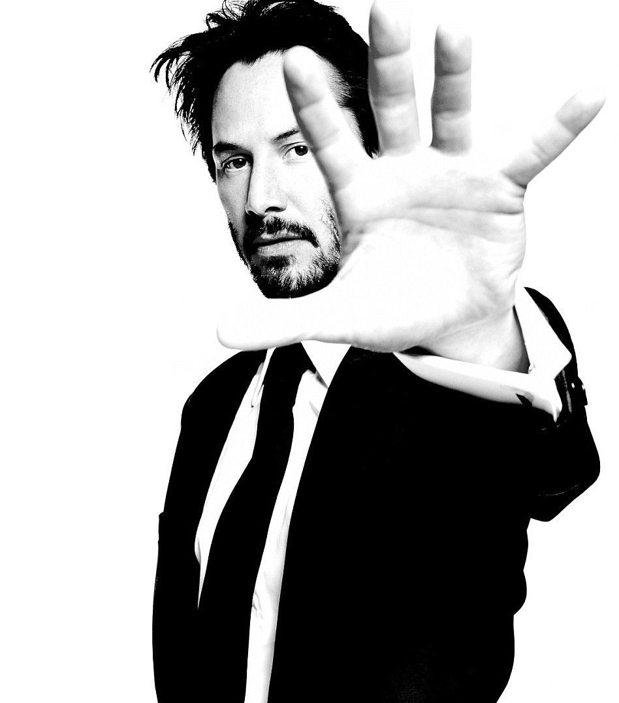
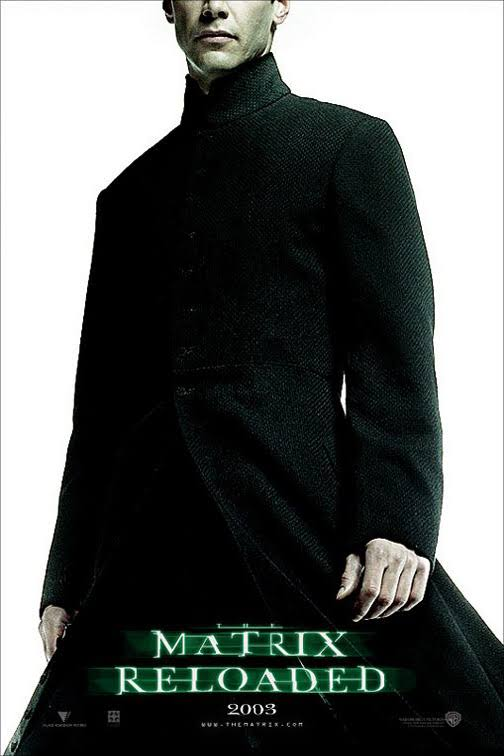
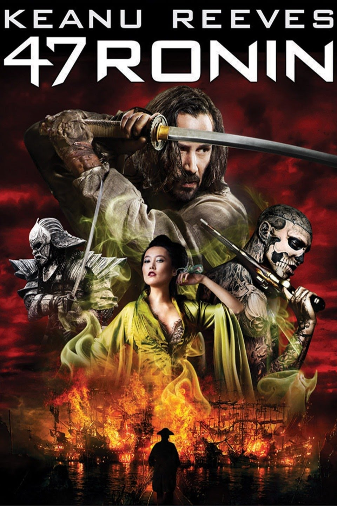

"THE MAN. THE MYTH. THE LEGEND. JOHN WICK. YOU'RE NOT VERY GOOD AT RETIRING."

Keanu Reeves
A well-known Action Superstar that has won multiple awards in MTV Movie and TV Awards, and also won in People's Choice Awards. Here are some of his best movies of all time:



Who is Keanu Reeves?
Keanu Reeves was born on September 2, 1964, in Beirut, Lebanon, and was raised in Toronto, Canada. He first gained attention for his performance in River's Edge, while the comedy Bill & Ted's Excellent Adventure and its sequel, Bill & Ted's Bogus Journey, brought him major recognition. Reeves has developed an eclectic film roster that includes the action flick Speed and the sci-fi blockbusters The Matrix and its sequels, as well as more art-house fare like My Own Private Idaho and The Private Lives of Pippa Lee. Reeves made his directorial debut in 2013 with Man of Tai Chi.
If you want to know more, click here! Keanu Reeves Wikipedia